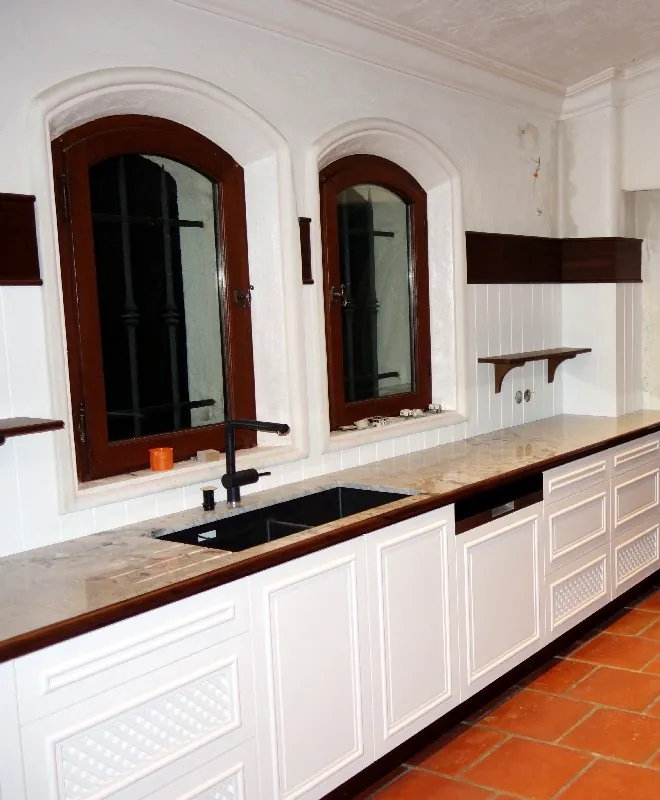
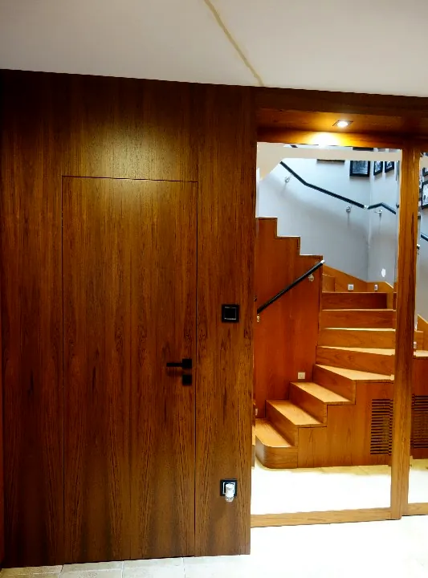
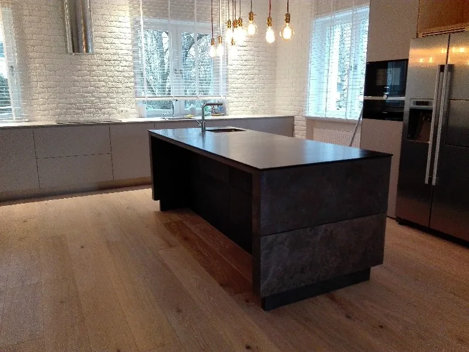

Trwałość
Dobre materiały i sprawdzone technologie wykonania to meble, które służą przez długie lata.

Tomdar-Meble to stolarnia w Głoskowie-Letnisku prowadzona przez dwóch wspólników: Dariusza Skorupskiego i Tomasza Pliszkę.
Tomdar-Meble to pracownia stolarska z dużym doświadczeniem. Ponad 20 lat pracy z drewnem pozwala nam stale doskonalić umiejętności, a każde zlecenie traktujemy osobiście.
Dbamy tak samo o ogólny wygląd mebla, jak o każdy szczegół i najmniejszy detal. Nie wyróżniamy jednego kierunku: wykonujemy meble w stylu prowansalskim, rustykalnym i industrialnym, a także nowoczesne, eleganckie zabudowy. Nie ma dla nas rzeczy niemożliwych.
Inwestujemy w nowoczesne zaplecze maszynowe i narzędzia. Nie akceptujemy pobieżnych, niesprawdzonych technik, na które zawód stolarza nie może sobie pozwolić.
Jedyne, co nas w życiu ogranicza, to nasza wyobraźnia.

Dobre materiały i sprawdzone technologie wykonania to meble, które służą przez długie lata.
Nie boimy się wyzwań, dlatego tworzymy meble dokładnie takie, jakie wymarzyli sobie nasi klienci.
Łączymy cechy użytkowe i estetyczne, dzięki czemu nasze meble tworzą niebanalny klimat wnętrza.
Każde zlecenie traktujemy osobiście. Zadzwoń bezpośrednio do jednego z nas.

Nie trzymamy się jednego stylu ani jednego materiału. Pomagamy dobrać połączenie, które będzie dobrze wyglądać i długo służyć.
płyty MDF, płyty laminowane, drewno, kamień, szkło, stal kwasowa
lakierowanie, patynowanie, oklejanie i wiele innych technik
prowansalski, rustykalny, industrialny, nowoczesny
Współpracujemy z projektantami wnętrz, więc pomożemy przy całej aranżacji pomieszczenia albo tylko przy jej części.
Masz wymiary albo projekt? Przygotujemy wycenę.
Pliki cookies
Strona używa niezbędnych plików cookies oraz mapy Google, która może zapisywać własne pliki cookies. Szczegóły w polityce prywatności.